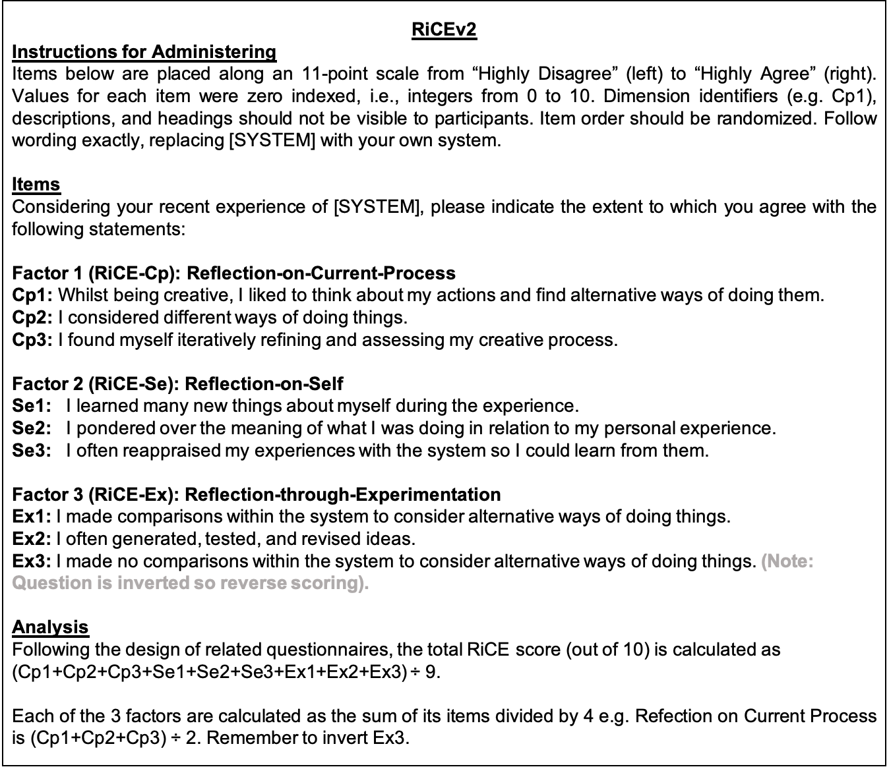

The Reflection in Creative Experience Questionnaire
This ongoing project aims to develop a questionnaire measure for differentiating between creative experiences with more or less moments of reflection. It can be used post-hoc after someone has used a CST in a creative activity.
Refection is underexplored in Creativity Support Tool (CST) research, partly due to its ambiguous nature. There is no comparable way of measuring types of reflection in creative contexts. Current HCI questionnaires for reflection tend to focus on domains with clear goals such as personal informatics, which are at odd with the non-functional goals of creative tasks. RiCE presents a measure of a CST’s capacity to support refection.
Overview
Through consultation with experts on creativity, feedback from 300+ users of creative tools, and conducting statistical analysis of this data, RiCE includes questions for three types of reflection which might occur in creative practice:- Reflection on Current Process. Do people reflect on their creative process when being creative? Do people think about their actions to find alternative ways of doing them. Do they often re-examine things they have already learnt?
- Reflection on Self. Do people reflect on themselves and their personal experience? Do they learn things about themselves during the experience? Do they ponder over the meaning of what they were doing in relation to their personal experiences?
- Reflection through Experimentation. Do people reflect on ideas tested when using technology? Do people make comparisons with their CSTs to consider ways of doing things? Do they generate, test and revise ideas in the moment?
Most Recent Version (RiCEv2)
RiCE is currently in continual development. The first version of the questionnaire and initial validation can be found in our publication at CHI. Through ongoing research which culminated in Ford's PhD Thesis, we suggest researchers use the version of the tool described below. Please cite the thesis and signpost to this website using the URL in the footer (see citation below).

Baselines
To place RiCE scores in context, we calculated RiCEv2 scores from the open-source dataset in Ford & Bryan-Kinns (2023), originally used to identify factors of RiCE. The open-source dataset is comprised of RiCE scores for CSTs including Photoshop, Word, and some DAWs (e.g. Cubase, Garageband, FL Studio, Ableton and Logic Pro). Researchers can use this to compare their own tools against these scores.
| Dataset from Ford & Bryan Kinns (2023) | RiCEv2-Cp | RiCEv2-Se | RiCEv2-Ex | RiCEv2 |
|---|---|---|---|---|
| All CSTs (n=300) | 7.4 | 6.1 | 6.9 | 6.8 |
| MS Word Subset (n=43) | 7.2 | 6.4 | 6.6 | 6.7 |
| Photoshop Subset (n=42) | 7.4 | 5.9 | 7.1 | 6.8 |
| Visual Studio Subset (n=15) | 8.0 | 7.1 | 7.3 | 7.5 |
| DAWs Subset (n=8) | 7.6 | 5.7 | 7.1 | 6.8 |
Get Involved
To get involved please contact Corey Ford c.ford@arts.ac.uk.
Citing This Work
Corey Ford. 2025. Reflection in Creativity Support Tool Interaction: Characterisations for AI-based Music Composition. PhD Dissertation. Queen Mary University of London. Available at https://qmro.qmul.ac.uk/xmlui/handle/123456789/111951 BibTex@phdthesis{ford_thesis_2025, author = {Ford, Corey}, title = {Reflection in Creativity Support Tool Interaction: Characterisations for {AI}-based Music Composition}, school = {Queen Mary University of London}, year = {2025}, url = {https://qmro.qmul.ac.uk/xmlui/handle/123456789/111951} }